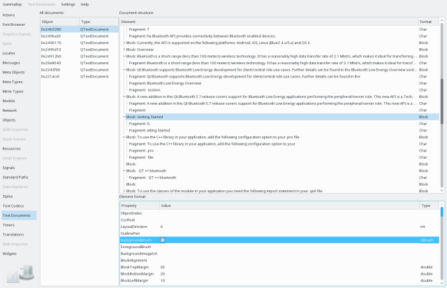

The text document inspector allows to introspect the document object tree of QTextDocument instances found in the target application.

The document list on the left side shows all QTextDocument instances, selecting one of those shows the document object tree in the top-right view. Navigation to other views is available using the context menu.
The document object tree on the upper right shows the tree of elements composing the text document. This includes blocks (see QTextBlock), fragments (QTextFragment), tables (QTextTable), and so on. Selecting an element shows the corresponding formats in the format view at the lower right.